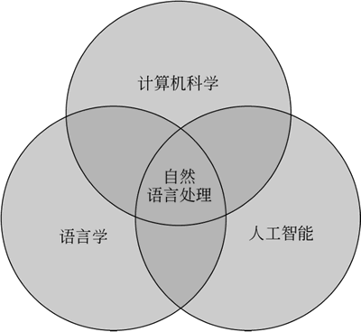
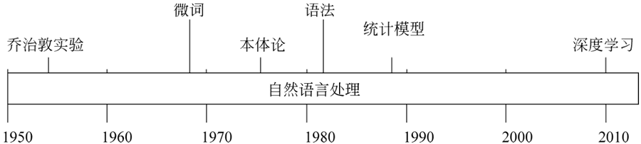
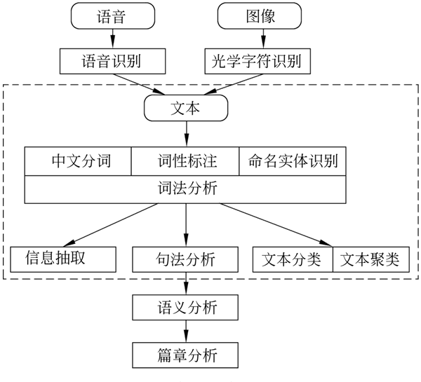
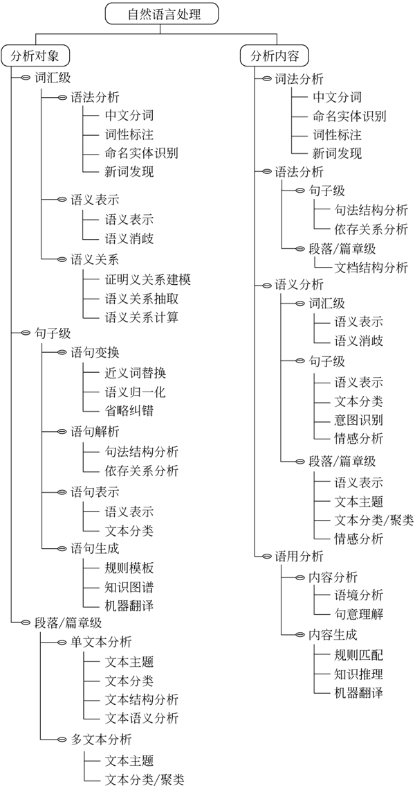

首页 > 编程笔记
自然语言处理（NLP）介绍（非常详细）
自然语言（Natural Language）是人类交流和思考的主要工具，通常是指一种自然地随文化演化的语言（如英语、汉语等）。编程语言是指计算机程序设计语言，如 C、Java、Python 等。
自然语言与编程语言的对比如下表所示：
自然语言处理（Natural Language Processing，NLP）主要探讨如何让计算机“理解”（Natural Language Understanding，NLU）人类的语言、让计算机自动“生成”语言（Natural Language Generation，NLG）。
自然语言处理是一门融合了计算机科学、人工智能及语言学的交叉学科，研究如何通过机器学习等技术，让计算机学会处理人类语言、理解人类语言，如下图所示：
1948 年，香农把离散马尔可夫过程的概率模型应用于描述语言的自动机，同时又把“熵”的概念引入自然语言处理。克莱尼在同一时期研究了有限自动机和正则表达式。
1956 年，乔姆斯基提出了上下文无关语法，导致了基于规则和基于概率两种不同的自然语言处理方法，使得该领域的研究分成了采用规则方法的符号派和采用概率方法的随机派两大阵营，进而引发了其后数十年有关这两种方法孰优孰劣的争执。
同年，人工智能诞生以后，自然语言处理迅速融入了人工智能的研究中。随机派学者利用贝叶斯方法等统计学原理取得了一定的进步，符号派也进行了形式语言理论生成句法和形式逻辑系统的研究。这一时期，多数学者注重研究推理和逻辑问题，只有少数学者在研究统计方法和神经网络。
1967 年，美国心理学家 Neisser 提出了认知心理学，从而把自然语言处理与人类的认知联系起来。
20 世纪 90 年代以后，随着计算机的速度和存储量大幅提高，网络技术的大力发展，语音和语言处理的商品化开发成为可能，基于自然语言的信息检索和信息抽取的需求变得更加突出，自然语言处理不再局限于机器翻译、语音控制等早期研究领域。
自然语言处理流程如下图所示：
自然语言处理的研究方向包括如下内容。
自然语言处理的内容如下图所示：
自然语言与编程语言的对比如下表所示：
| 比较 | 不 同 |
|---|---|
| 词汇量 | 自然语言中的词汇比编程语言中的关键词丰富，随时创造各种类型的新词 |
| 结构化 | 自然语言非结构化，而编程语言是结构化的 |
| 歧义性 | 自然语言含有大量歧义，而编程语言是确定的 |
| 容错性 | 自然语言的错误随处可见，而编程语言错误会导致编译不通过 |
| 易变性 | 自然语言变化相对迅速嘈杂一些，而编程语言的变化要缓慢得多 |
| 简略性 | 自然语言往往简洁、干练，而编程语言就要明确定义 |
自然语言处理（Natural Language Processing，NLP）主要探讨如何让计算机“理解”（Natural Language Understanding，NLU）人类的语言、让计算机自动“生成”语言（Natural Language Generation，NLG）。
自然语言处理是一门融合了计算机科学、人工智能及语言学的交叉学科，研究如何通过机器学习等技术，让计算机学会处理人类语言、理解人类语言，如下图所示：

图 1 自然语言处理的定位
图 1 自然语言处理的定位
发展历程
自然语言处理发展历程如下图所示，大致分为以下三个阶段。

图 2 自然语言处理发展历程
图 2 自然语言处理发展历程
第一阶段：1950-1990年，基于语言学规则的语言处理技术
通过用计算机程序设计语言、制定一系列的规则表示人类语言。1948 年，香农把离散马尔可夫过程的概率模型应用于描述语言的自动机，同时又把“熵”的概念引入自然语言处理。克莱尼在同一时期研究了有限自动机和正则表达式。
1956 年，乔姆斯基提出了上下文无关语法，导致了基于规则和基于概率两种不同的自然语言处理方法，使得该领域的研究分成了采用规则方法的符号派和采用概率方法的随机派两大阵营，进而引发了其后数十年有关这两种方法孰优孰劣的争执。
同年，人工智能诞生以后，自然语言处理迅速融入了人工智能的研究中。随机派学者利用贝叶斯方法等统计学原理取得了一定的进步，符号派也进行了形式语言理论生成句法和形式逻辑系统的研究。这一时期，多数学者注重研究推理和逻辑问题，只有少数学者在研究统计方法和神经网络。
1967 年，美国心理学家 Neisser 提出了认知心理学，从而把自然语言处理与人类的认知联系起来。
第二阶段：1990年-2010年，基于统计的机器学习处理技术
运用统计模型和语料库进行自然语言处理，统计学习方法其实就是机器学习的别称，其中，基于隐马尔可夫模型的统计方法和话语分析在这一时期取得了重大进展。20 世纪 90 年代以后，随着计算机的速度和存储量大幅提高，网络技术的大力发展，语音和语言处理的商品化开发成为可能，基于自然语言的信息检索和信息抽取的需求变得更加突出，自然语言处理不再局限于机器翻译、语音控制等早期研究领域。
第三阶段：2010年至今，基于神经网络的深度学习
从 20 世纪 90 年代末起，人们逐渐认识到仅基于规则或基于统计的方法，无法取得成功。基于神经网络的深度学习被应用于自然语言处理，取得了较好的结果。处理流程
计算机处理自然语言的过程具有“四化”：形式化、算法化、程序化和实用化，具体如下：- 形式化：把需要研究的问题在语言上建立形式化模型，使其以数学形式严密规整地表示出来，这个过程就是“形式化”。
- 算法化：把数学模型表示为算法的过程称为“算法化”。
- 程序化：根据算法建立自然语言处理系统，这个过程就是“程序化”。
- 实用化：对系统进行评测和改进最终满足现实需求，这个过程就是“实用化”。
自然语言处理流程如下图所示：

图 3 自然语言处理流程
图 3 自然语言处理流程
研究内容
自然语言处理，是研究计算机处理人类语言的一门技术，分为：语言学方向、数据处理方向、语言工程方向、人工智能和认知科学方向 4 大方向。自然语言处理的研究方向包括如下内容。
- 句法语义分析：对于给定的句子，进行分词、词性标记、命名实体识别和链接、句法分析、语义角色识别和多义词消歧。
- 信息抽取：从给定文本中抽取重要的信息，如时间、地点、人物等，涉及实体识别、时间抽取、因果关系抽取等关键技术。
- 文本挖掘：包括文本聚类、分类、信息抽取、摘要、情感分析以及对挖掘的信息和知识的可视化、交互式的表达界面。目前主流的技术都是基于统计机器学习。
- 机器翻译：把输入的源语言文本通过自动翻译获得另外一种语言的文本，可分为文本翻译、语音翻译、图形翻译等。机器翻译从最早的基于规则的方法到二十年前的基于统计的方法，再到如今的基于神经网络的方法，逐渐形成了一套比较严谨的方法体系。
- 信息检索：对大规模的文档进行索引。在查询时，对表达式的检索词或者句子进行分析，在索引里面查找匹配的候选文档，通过排序机制把候选文档排序，输出得分最高的文档。
- 问答系统：对自然语言查询语句进行某种程度的语义分析，包括实体链接、关系识别，形成逻辑表达式，在知识库中查找可能的候选答案，通过排序机制找出最佳的答案。
- 对话系统：系统通过一系列的对话，跟用户进行聊天、回答、完成某一项任务，涉及用户意图理解、通用聊天引擎、问答引擎、对话管理等技术。
自然语言处理的内容如下图所示：

图 4 自然语言处理的内容
图 4 自然语言处理的内容
关注公众号「站长严长生」，在手机上阅读所有教程，随时随地都能学习。内含一款搜索神器，免费下载全网书籍和视频。

微信扫码关注公众号